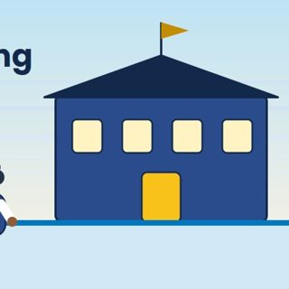
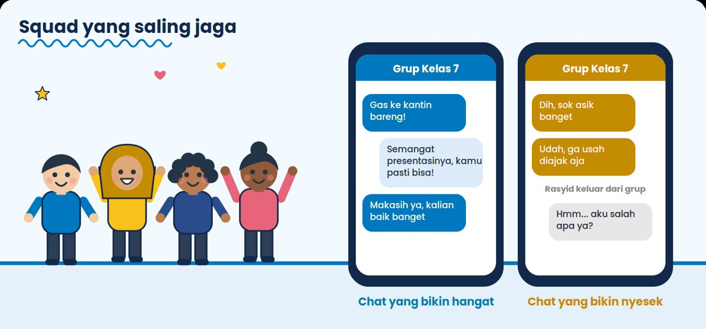
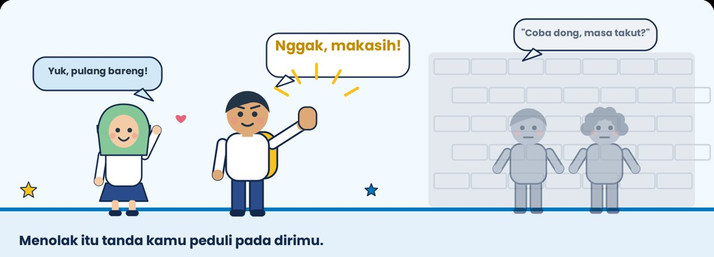
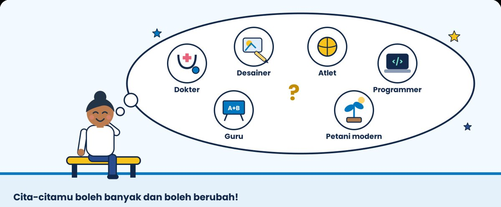

Kartu Refleksi & Kuis BK
Teman main Buku BK Kelas 7 SMP Labschool Ciracas. Pilih bab, jawab kartu dengan jujur, lalu kumpulkan bintang di tantangan kuisnya.
Pilih babmu
6 bab-

Kenalan dengan budaya, aturan, dan fasilitas sekolah barumu, plus tahu harus ke siapa saat butuh bantuan.
8 kartu refleksi · kuis 12 poin
-

Paham apa itu AKM tanpa panik, lalu latihan memahami bacaan dan berpikir pakai angka.
6 kartu refleksi · kuis 12 poin
-

Kenali perubahan tubuh dan perasaanmu, dan cara mengelola emosi dengan sehat.
12 kartu refleksi · kuis 12 poin
-

Pertemanan yang sehat, bercanda vs bullying, batasan diri, dan berani bilang tidak.
14 kartu refleksi · kuis 12 poin
-

Fakta dan mitos NAPZA, cara menolak ajakan, dan ke mana mencari bantuan.
6 kartu refleksi · kuis 12 poin
-

Bedanya minat dan bakat, tipe kepribadian karier, dan tujuan SMART-mu.
8 kartu refleksi · kuis 12 poin





Cara mainnya gampang
Setiap bab punya dua permainan. Kartu Refleksi untuk mengenal dirimu, dan Tantangan Kuis untuk mengecek pemahamanmu. Main sendiri atau bareng teman sebangku, di HP atau laptop.
Mau cerita langsung?
Pintu ruang BK selalu terbuka, untuk cerita besar maupun cerita kecil.
Ajak teman sekelasPindai kode QR ini untuk membuka halaman ini di HP lain.
Lokasi ruang BKLantai 1 di samping lobi, dan lantai 7 di sebelah Tata Usaha.
Waktu layananIstirahat pertama, istirahat kedua, dan 1 jam setelah pulang sekolah.
Cara membuat janjiKirim pesan WhatsApp ke guru BK, atau datang langsung kalau masalahnya mendesak.
Guru BKNurul Wafa Amatullah, Muhammad Farel P., dan Asmaa Mufida Rahman.